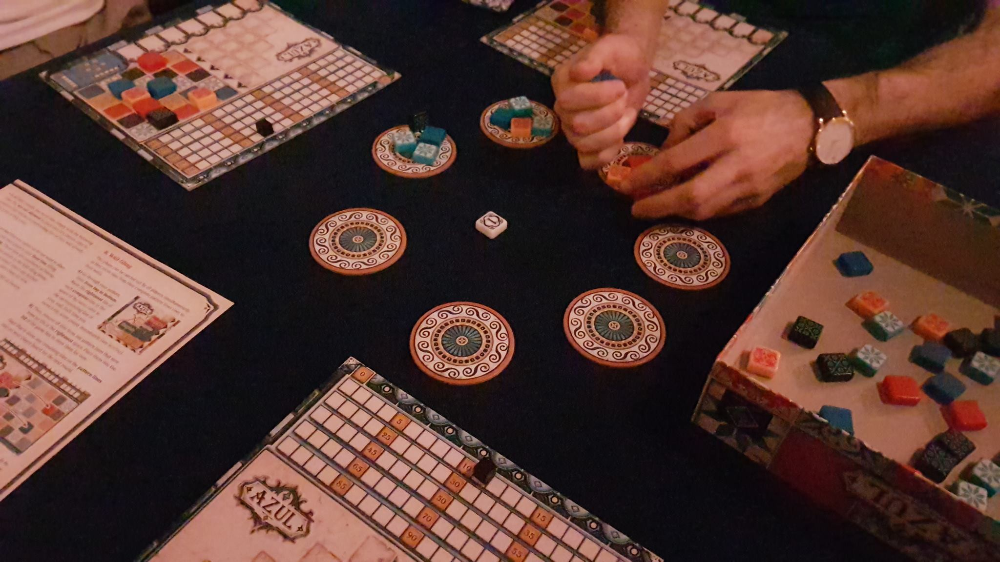

Drafting is when a collection of resources is offered around players, who take a resources from that collection for their own use and then the next player in some order has a choice.
A draft might be to take 1 or some items from a selection of singlular or groups of items. Or it might be to pass handfulls of options to players beside them after subtracting one from that handfull.
All sorts of objects are drafted in various games: Cards, dice, tiles - are common examples.
The collection drafted might be secretive, known only to the current draft, or openly visible to all.
In "Azul" you take all of one colour from one of several circular placemats, which have been randomly filled.
A draft might be to take 1 or some items from a selection of singlular or groups of items. Or it might be to pass handfulls of options to players beside them after subtracting one from that handfull.
All sorts of objects are drafted in various games: Cards, dice, tiles - are common examples.
The collection drafted might be secretive, known only to the current draft, or openly visible to all.
In "Azul" you take all of one colour from one of several circular placemats, which have been randomly filled.

What is the most of one colour that you can take in your turn in Azul?